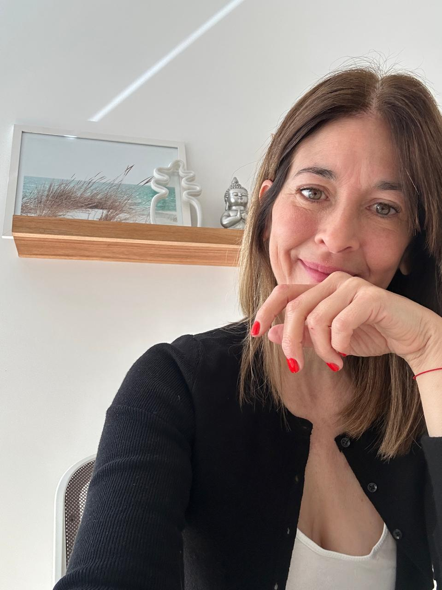

El inicio: Nace el primer espacio de consulta y comunidad sobre ley de reproducción asistida en Argentina. Una semilla pequeña con una necesidad enorme detrás.
Estudio Jurídico Especializado en Derecho Reproductivo y Salud en general.
Nosotros los conocemos.
Somos un estudio especializado en Derecho Reproductivo y de la Salud con más de 11 años de trayectoria. Porque hay momentos donde necesitás más que un médico — necesitás a alguien que sepa defender lo que te corresponde por ley.
Hay estudios que hacen de todo.
Nosotros elegimos hacer una sola cosa muy bien.
SHIFF & CASTRO lleva 11 años dedicados exclusivamente al derecho reproductivo y de salud en general. Eso nos dio algo que no se improvisa: profundidad real en el área, relaciones con los especialistas y magistrados que importan, y una historia de casos resueltos que es nuestra mejor carta de presentación.
Cuando llegás a nosotros, no estás explicando el tema desde cero. Ya lo conocemos.
Pero más allá del conocimiento técnico, entendemos que detrás de cada caso hay una persona atravesando un momento difícil. Por eso acompañamos no solo con estrategia legal, sino con la cercanía de quien realmente entiende lo que está en juego.

Paula Shiff es abogada UBA especializada en derecho reproductivo desde 2013. De pasar por un camino difícil. De buscar ser madre. Descubrir que había derechos que no conocía. De pelear por ellos. De ganar. Y de decidir que otras mujeres no tuvieran que hacer ese camino sin ayuda profesional. Creadora de El Club de las Soñadoras®
Lo que Paula ha logradoMartín Castro es abogado UBA especializado en Amparos de Salud. Interviene cuando el sistema niega cobertura, demora tratamientos o vulnera derechos de pacientes. Con más de 11 años de experiencia, conoce el sistema por dentro y sabe exactamente dónde apretar.
Lo que Martín ha logradoLo que empezó como una inquietud se convirtió en el estudio de referencia en Derecho Reproductivo y Salud del país.
El inicio: Nace el primer espacio de consulta y comunidad sobre ley de reproducción asistida en Argentina. Una semilla pequeña con una necesidad enorme detrás.
Consolidación: La comunidad crece. Miles de mujeres y parejas encuentran en el estudio un lugar donde entender sus derechos y tomar decisiones informadas.
Expansión: El estudio se formaliza y amplía su alcance. Se suman nuevas áreas de práctica en salud general y amparos. La presencia digital se consolida con más de 40.000 personas en la comunidad.
Referencia: El estudio es reconocido como referente en Derecho Reproductivo y Salud. Casos complejos, jurisprudencia relevante y un equipo que conoce el sistema por dentro.
En 2013, la Ley de Fertilidad 26.862 recién había sido sancionada. Y nosotros estábamos atravesando nuestra propia búsqueda de embarazo.
Ciclos de esperanza y duelo. Desinformación. Y un descubrimiento que nos cambió todo: había derechos que no estaban siendo respetados, y que la mayoría desconocía. Derechos que nuestras obras sociales vulneraban. Derechos que la ley nos otorga pero nadie explicaba. Derechos que podíamos reclamar, pero no sabíamos cómo.
Así que decidimos aprender. Estudiamos. Investigamos. Litigamos. Y ganamos.
Pero mientras lo hacíamos, entendimos que no éramos los únicos. Miles de personas estaban en la misma situación — buscando, sin saber si tenían derecho a lo que necesitaban. Entonces construimos algo más que un estudio: construimos un espacio. Porque sabíamos lo que era no saber. Y sobre todo, sabíamos lo invaluable que es sentirse acompañada/o.
Hoy peleamos por vos con todo eso detrás.
Lo que logramosConsulta Inicial: Conocer Tus Derechos
Cobertura de tratamientos, FIV, ovodonación, gestación subrogada, derechos ante obras sociales y prepagas.
Amparos de salud, medicamentos de alto costo, tratamientos negados, cobertura de discapacidad, salud mental, oncología.
Todo lo que pasa cuando el sistema falla y necesitás respaldo legal rápido y efectivo.
Tu prepaga te negó cobertura. Vamos a reclamar.